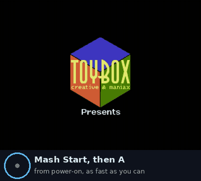
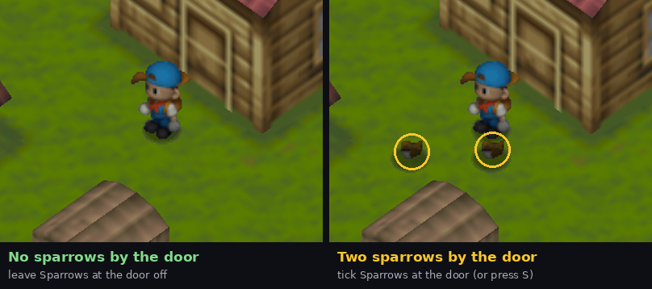
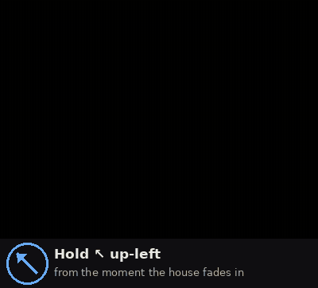
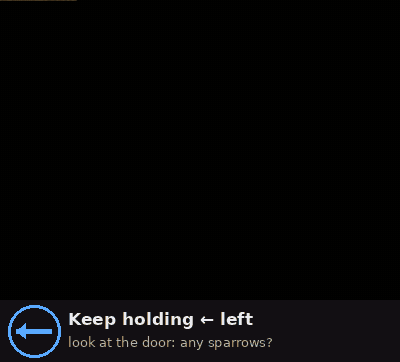
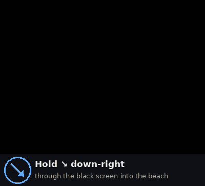
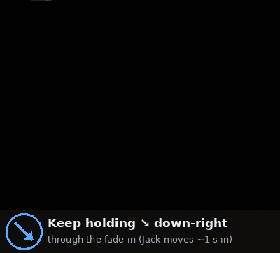

Guide HM64 Power Nut Tool v32.18
1 · Your game file
The tables hold for one kind of game file: the weather of the morning you play and whether you own the horse each change the game's random numbers before you reach the pier, so each has tables of its own. Pick yours (the hub's ticks pick it too):
Sunny · No horseReady← yours
Before you have a horse. The dog is left on the beach the day before.
What the file needs- No horse yet. Anything that moves on the route and is not in the lab's file (a horse, farm animals) can draw random numbers before the beach and send you down another path.
- The fishing rod in Jack's hand (equipped), not in the rucksack.
- The dog left on the beach the day before, in the far south-west corner (bottom-left on screen), and not carried anywhere on the day you play. From the end of the pier it sits at the lower-left edge of the screen.
- Saved in bed in the first diary slot (another slot means extra menu presses: later than the tables).
- The day before: carry the dog to the beach, put it down in the farthest south-west (bottom-left) corner and leave it there.
- Check the rod is in Jack's hand and you have no horse.
- Go home, go to bed and save in the first diary slot.
- The next morning must be sunny with no wake-up cutscene. If it rains, tick Rainy morning on the hub and use the rainy pages (the same file), or reload the day before and sleep again.
Sunny · HorseReady← yours
You own the horse. The dog is left on the beach the day before, the horse stays out of sight on the farm.
What the file needs- You own the horse. A file with the horse draws a few more random numbers on the way (on the farm, at the crossroads and on the ranch) even though the horse never comes on screen, so it needs these tables and not the no-horse ones.
- The horse left on the farm far from the house door, where it never comes on screen while Jack walks from the door to the farm exit. A horse that comes on screen draws more random numbers (and can get in the way) and sends you down another path.
- The lab's file has the pony (not yet grown). A grown horse has not been tested.
- The fishing rod in Jack's hand (equipped), not in the rucksack.
- The dog left on the beach the day before, in the far south-west corner (bottom-left on screen), and not carried anywhere on the day you play. From the end of the pier it sits at the lower-left edge of the screen.
- Saved in bed in the first diary slot (another slot means extra menu presses: later than the tables).
- The day before: carry the dog to the beach, put it down in the farthest south-west (bottom-left) corner and leave it there.
- Make sure the horse is on the farm far from the house door, out of sight of the walk from the door to the farm exit (in the lab's file it is at x 449, z −339 in game units).
- Check the rod is in Jack's hand.
- Go home, go to bed and save in the first diary slot.
- The next morning must be sunny with no wake-up cutscene. If it rains, tick Rainy morning on the hub and use the rainy pages (the same file), or reload the day before and sleep again.
Rainy · No horseReady← yours
A rainy morning before you have a horse. The dog is left on the beach the day before, as for the sunny tables.
What the file needs- A rainy morning: it is raining when Jack walks out of the house. Outdoors the rain draws random numbers every frame, so these are other dog lines than on a sunny morning. No sparrows come to the farm in the rain: one table covers menus 0–6 frames late, and the rainy pages have no sparrow box.
- No horse yet. Anything that moves on the route and is not in the lab's file (a horse, farm animals) can draw random numbers before the beach and send you down another path.
- The fishing rod in Jack's hand (equipped), not in the rucksack.
- The dog left on the beach the day before, in the far south-west corner (bottom-left on screen), and not carried anywhere on the day you play. From the end of the pier it sits at the lower-left edge of the screen.
- Saved in bed in the first diary slot (another slot means extra menu presses: later than the tables).
- The day before: carry the dog to the beach, put it down in the farthest south-west (bottom-left) corner and leave it there.
- Check the rod is in Jack's hand and you have no horse.
- Go home, go to bed and save in the first diary slot.
- The next morning must be rainy with no wake-up cutscene. If it is sunny, untick Rainy morning on the hub and use the sunny pages (the same file), or reload the day before and sleep again.
Rainy · HorseReady← yours
A rainy morning with the horse. The dog is left on the beach the day before, the horse stays out of sight on the farm.
What the file needs- A rainy morning: it is raining when Jack walks out of the house. Outdoors the rain draws random numbers every frame, so these are other dog lines than on a sunny morning. No sparrows come to the farm in the rain: one table covers menus 0–6 frames late, and the rainy pages have no sparrow box.
- You own the horse. A file with the horse draws two more random numbers on the farm (the pony) even though it never comes on screen. On a rainy morning the rain swallows them on most paths but not on all, so this file needs these tables and not the rainy no-horse ones.
- The horse left on the farm far from the house door, where it never comes on screen while Jack walks from the door to the farm exit. A horse that comes on screen draws more random numbers (and can get in the way) and sends you down another path.
- The lab's file has the pony (not yet grown). A grown horse has not been tested.
- The fishing rod in Jack's hand (equipped), not in the rucksack.
- The dog left on the beach the day before, in the far south-west corner (bottom-left on screen), and not carried anywhere on the day you play. From the end of the pier it sits at the lower-left edge of the screen.
- Saved in bed in the first diary slot (another slot means extra menu presses: later than the tables).
- The day before: carry the dog to the beach, put it down in the farthest south-west (bottom-left) corner and leave it there.
- Make sure the horse is on the farm far from the house door, out of sight of the walk from the door to the farm exit (in the lab's file it is at x 449, z −339 in game units).
- Check the rod is in Jack's hand.
- Go home, go to bed and save in the first diary slot.
- The next morning must be rainy with no wake-up cutscene. If it is sunny, untick Rainy morning on the hub and use the sunny pages (the same file), or reload the day before and sleep again.
Is my file right? The dog's exact spot matters: the lab found that what counts is which 32-unit tile of the beach the dog stands on, and a different tile shifts every dog line. You cannot see tiles, so use the tool's own check: after a few Lucky Timer attempts in which you tapped Space at a bite, open Setup & review → L5 → Is the app working?. If your bite taps keep fitting no dog line (off the tables), your file, your menu speed or your route does not match the lab's. Within the tile the exact spot matters only now and then: the lab's files (their dogs 2.2 units apart on the same tile) share nearly all their dog lines, and on those lines 97–99% of cast moments have the same bites; the rest differ where the dog walks off the screen a moment earlier or later.
2 · The route
Everything from power-on to the bottom of the beach's back wall decides which dog line you get, and the cut onto the pier decides when you reach READY, so the route is played as fast as possible with the same turns every time. Small hesitations are expected: the tables cover a range of human timings (How it works shows how much).
2.1 Power-on and menus
Turn the console on and mash Start, then A, through the title screen and the diary, to load your file as fast as you can. The tables cover reaching the house up to 6 game frames (0.2 s) later than the fastest possible: 0–4 frames late is the main table, 5–6 frames late has its own (the sparrow morning, next).on a rainy morning one table covers all of them (no sparrows in the rain, next). Slower is off the tables.

2.2 Sparrows at the door
Not on a rainy morning. No sparrows come to the farm in the rain, so nothing tells 0–4 from 5–6 frames late: the rainy pages have one table for both and no sparrow box. Nothing to check here.
As Jack walks out of the house, look at the door: two sparrows by the door mean your menus were 5–6 frames late. That morning has its own table: tick Sparrows at the door on the page (or press S) before the pier. No sparrows by the door: leave it unticked. (Sparrows also appear on some slower mornings that no table covers.) A wrong box means the wrong table, so check the door every attempt.

2.3 House, farm, crossroads, ranch: one held direction per screen
- House: hold up-left through the fade-in, cut down-left around the table, then down out of the door. About 4 game frames (0.13 s) of slack here.
- Farm: hold left to the exit. Look at the door while it fades in (2.2).
- Crossroads: left, then cut down-left. About 3 game frames (0.10 s) of slack.
- Ranch: hold down-right to the beach. Keep holding it through the black screen into the beach.




3 · The beach: the zigzag
The beach is three legs and two turns. Never stop and never walk straight down.
- Down-right (held from the ranch, through the fade-in). Jack starts moving about a second after the beach appears.
- First cut, down-left: the moment Jack clears the small wall, on that game frame or the next (the "tight first turn"). Then hug the back wall going down-left. Turned a little late and Jack drifts off the wall? Press up a moment and carry on: it costs up to half a second, and the tables cover it (the Small fix and Big fix presets).
- Second cut, down-right, onto the pier: anywhere across the pier's width. Where you cut decides where Jack stops at the end: Early = near edge, Middle, Late = far edge; all are in the tables. Cut outside the pier's window (too early or too late) and Jack does not make it onto the pier: that attempt is not in the tables, restart.
- Hold down-right until Jack stops at the water at the end of the pier, facing the sea. This moment is READY.



3.1 Space at the end of the pier
Tap Space once, the moment Jack stops at the water. That one tap starts the tool's stopwatch; the dog cards, the cast cue and the bite calls all count from it. The tool allows for your reaction time and learns your personal delay from your bite taps over time. From here the hands are split: the controller casts (B) and reels, the keyboard is for the tool.

3.2 Stay awake
Jack lies down after 40 s with no input. A red WAKE JACK line crosses the Lucky Timer's histogram 33.4 s after READY (and every 33.4 s after that) while you are still waiting to cast. When it reaches the white line, push the stick down-right once: that resets the nap timer and does not change the dog or the bites (measured in the lab). Never push the stick after you have cast; fishing keeps him awake.